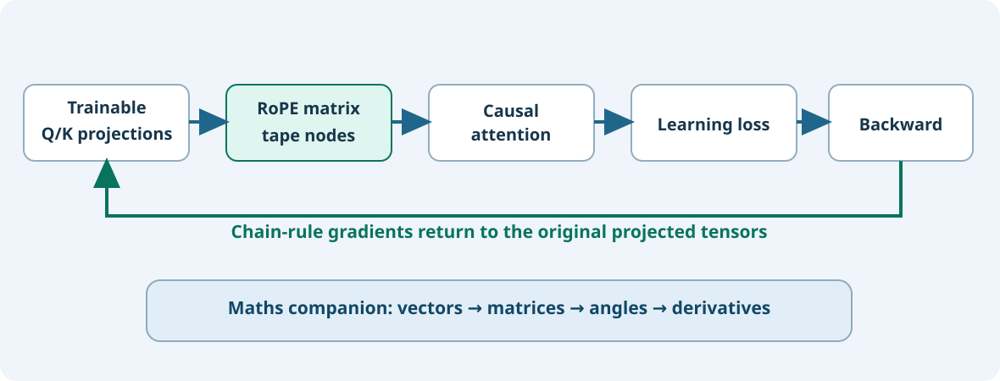

Learning objectives
Understand how a rotary transformation enters the existing native C23 automatic-differentiation tape, follow gradients from loss to query/key vectors, run a bounded real training step, and recognise the performance and checkpoint limits of this educational composition.
1. Start with the requirement, not the notation
In Lesson 84 we could rotate an array of numbers and calculate the corresponding backward transformation. Those standalone arrays were not members of the existing training tape. A tape records operations and their connections so that a later loss calculation can send gradients back through them. If a new RoPE calculation merely copies numbers out of the tape and creates a disconnected new leaf, its gradient link to the original learned query/key projections disappears.
Batch 85–86 therefore introduces two additive Framework composition APIs: UmiAiTrainingRotaryTapeApply and UmiAiTrainingRotaryTapeAttention. Neither replaces the canonical tape or changes the existing learned-absolute-position decoder. The first rotates a projected tape tensor; the second rotates queries and keys and delegates softmax attention to the existing UmiAiTrainingMultiHeadCausalAttention implementation. The values tensor is unchanged.

2. How a rotation becomes an ordinary tape operation
For one vector, the rotary owner calculates a position-dependent rotated vector. We may describe it as y = R(p)x. Here x is the original vector, p is its absolute token position, R means a rotation matrix, and y is the rotated result. Matrix R is not a learned parameter: its entries are determined by the selected position and frequency configuration.
The existing tape supports ordinary matrix multiplication. To use it, our adapter expresses the same transformation in a row-vector convention: y = xMₚ, where Mₚ is the transpose of R(p). This is only a change in how we write the operation; the numeric transformation is the same.
For a simple 90° rotation, x = [1, 0] becomes y = [0, 1]. The adapter asks the existing rotary function to rotate each unit basis vector. These results form the fixed matrix for that position. It then uses UmiAiTrainingMatmul to calculate the rotated row inside the tape.
3. Rebuild the complete tensor without losing gradients
For each token row the Framework uses an existing gather operator to select one row, performs that row's rotation, and places the result at its original row using a one-hot selector matrix. It sums these placed rows to reconstruct the whole tensor. Every stage remains an ordinary tape operation. During UmiAiTrainingBackward, the chain rule runs through them in reverse order, back to the original projected tensor.
This approach has a cost. It deliberately creates many intermediate graph nodes: approximately six per token row for a rotation, minus one final addition. To keep the experiment bounded, this edition accepts at most eight token rows and eight channels. It is a correctness-oriented teaching bridge, not the optimal tape kernel for production training.
4. Read the central gradient formula in plain English
Symbols explained: L is the loss (numerical measure of prediction error). The ∂ symbol asks for the rate of change. x is the original query or key vector; y is its rotated version; p is token position; R(p)ᵀ is the transposed rotation matrix. The statement means: turn the gradient from rotated coordinates back into the original coordinates. This formula uses column vectors; the tape uses the equivalent transposed row-vector layout.
For example, when a 90° rotation sends [1, 0] to [0, 1], a gradient pointing upwards after rotation is mapped back to the right-pointing direction before rotation. The precise values depend on the upstream loss; rotation never creates an independent optimisation objective.
5. A native C23 laboratory
#include "umicom/ai/training/rotary_tape.h"
/* After constructing a tape and three [2,4] Q/K/V tensors: */
const UmiAiTrainingRotaryConfig rope = {2U, 2U, 10000.0};
UmiAiTrainingTensor *attended = NULL;
UmiStatus status = UmiAiTrainingRotaryTapeAttention(
tape, queries, keys, values,
&rope, 2U, 2U, NULL, 0U, &attended);
/* The existing tape now owns the attention result.
* Pass it into its normal loss and Backward operations. */In this call, 2U specifies two tokens in one sequence and two attention heads. The NULL,0U pair means the sequence starts at absolute position zero. The query/key/value tensors must all have four channels per row: two heads × two channels.
6. Understand failure and ownership
No intermediate tensor is visible to the caller until the operation succeeds. If a later allocation or tensor operation fails, the adapter rolls the tape back to the previous graph checkpoint and leaves outAttended unchanged. The earlier graph remains, but the tape's established rollback operation clears previous gradients. Run Backward again before using an optimiser.
7. Verification and limitations
The regression compares rotated tape output against the independently qualified RoPE array function, then compares gradients against the reverse RoPE operation. A second scenario evaluates a small causal attention loss and compares analytical query/key gradients with central finite differences. The rejection test imposes a tight tape memory budget and verifies rollback and output preservation.
Full-scale rotary training still needs a direct efficient tape operator, a separate RoPE model family, trained checkpoint encoding, training/evaluation parity and multi-layer cache qualification. This batch adds a real tape-connected learning path, not a finished production rotary decoder.
8. Exercises
- In
y = xMₚ, what does p specify, and why is it different from a row index? - Why would copying projected values into a new disconnected tensor lose an important gradient relationship?
- For two attention heads with two channels each, how many channels are in each projected token row?
- What happens to an existing tape graph and its gradients after an internal allocation failure?
Show the worked answers
p is the absolute token position; row index is only a location in memory. A disconnected tensor has no graph edge back to learned projections. Two heads × two channels = four channels. TapeRollback retains prior graph nodes but invalidates previous gradients, so Backward must be run again.